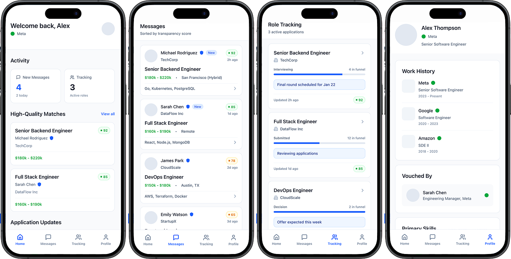
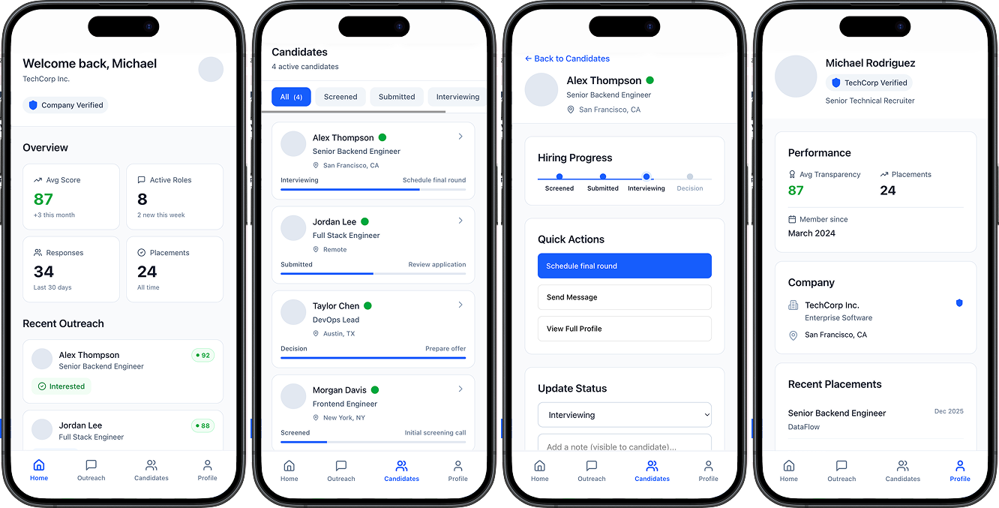

UX Strategy + SaaS Platform Design
Designing Trust for Digital Recruiting Platforms
A UX research and prototype project exploring how trust breaks down across digital recruiting platforms, and how SaaS product design can improve transparency, credibility, and confidence for candidates and recruiters.
Overview
Digital recruiting often depends on fast-moving interactions across job boards, ATS systems, recruiter outreach, messaging tools, and employer workflows. But while the systems are built for speed, the experience can feel unclear, impersonal, and difficult to trust.
This project explored the growing trust gap in digital recruiting and examined how product design could support more transparent and credible experiences across a multi-sided SaaS environment.
The Problem
Candidates often receive incomplete outreach, limited follow-up, and little visibility into where they stand. Recruiters, meanwhile, work inside fragmented tools and high-volume workflows that make thoughtful communication difficult to sustain.
The result is a shared trust problem: candidates feel uncertain and skeptical, while recruiters struggle to maintain consistency and credibility within systems that were not designed around trust.
Why This Matters in SaaS
Recruiting is not just a communication problem. It is a platform problem. Trust is shaped by workflow visibility, system signals, profile credibility, status updates, and the way product decisions support or hide key moments in the experience.
This made the project especially relevant to SaaS design, where the challenge is not only interface usability, but also how the platform supports transparency across multiple users, incentives, and stages of the hiring journey.
Research Approach
I explored the issue through research, pattern analysis, and structured synthesis across real recruiting behaviors and digital hiring touchpoints. The work focused on moments where trust appeared to weaken or disappear, including outreach, screening, handoff, waiting periods, and perceived legitimacy.
Candidate Friction
Lack of response, vague outreach, unclear role details, and poor status visibility made it hard to judge whether opportunities were real or worth pursuing.
Recruiter Friction
High-volume tools and fragmented systems encouraged efficiency, but often weakened personalization, continuity, and confidence in the process.
System Friction
Platform design often lacked signals that help users understand legitimacy, progress, accountability, and next steps.
Key Insight
Trust does not fail in one moment. It erodes across small, repeated breaks in clarity, follow-through, and platform transparency.
This insight reframed the challenge from “better communication” to “better trust architecture.” Instead of relying only on people to repair the experience, the product itself needed to create stronger signals of reliability and progress.
Design Direction
The prototype concept focused on building trust directly into the platform experience. Design opportunities included:
- Clearer status visibility across the hiring journey
- Stronger credibility markers for recruiters and opportunities
- More transparent expectations around timing and follow-up
- Structured communication moments that reduce ambiguity
- Better signals of accountability on both sides of the platform
Prototype Concept
I developed a prototype to explore how a recruiting platform could better communicate status, legitimacy, and progress. The concept centered on making invisible system states more visible to users, helping candidates and recruiters feel more informed at every step.
Rather than adding more messaging alone, the prototype treated trust as a product layer — something supported through clearer feedback, stronger UX writing, and more intentional workflow design.
For IT Professionals

For IT Recruiters

Outcome
This project strengthened my ability to connect domain expertise, service thinking, and SaaS product strategy. It also showed how UX can address trust not only through interface polish, but through system design, user signaling, and workflow transparency.
Reflection
Coming from a recruiting background gave me a unique lens into the problem, but the project pushed that understanding further by turning industry pain points into design opportunities. It reinforced my interest in products where user trust, business systems, and platform behavior are deeply connected.